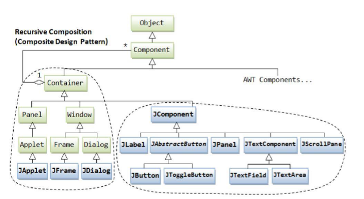
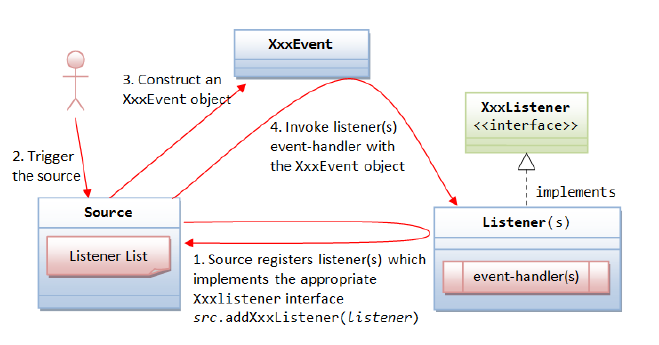
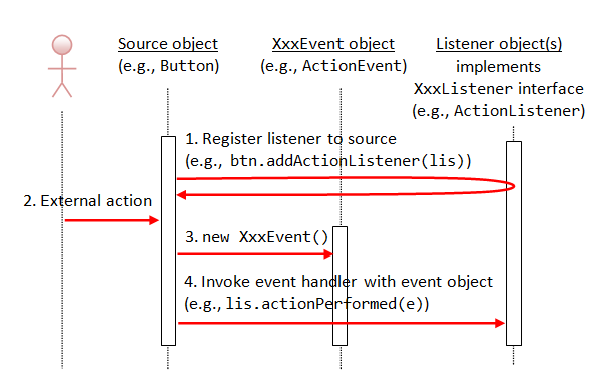

Interfaz gráfica de usuarios
Introducción a las interfaces gráficas
Una interfaz gráfica de usuario (GUI) permite la interacción con una aplicación mediante componentes visuales, como ventanas, botones, menús y cuadros de texto. En Java, las principales tecnologías para el desarrollo de interfaces gráficas han sido:
- AWT (Abstract Window Toolkit): biblioteca básica de componentes dependientes del sistema operativo.
- Swing: conjunto de clases más flexible y portable, basada en el modelo MVC.
- JavaFX: tecnología moderna con soporte para interfaces enriquecidas y multimedia.
Modelo MVC aplicado a interfaces
El modelo Modelo-Vista-Controlador (MVC) separa la lógica de negocio de la presentación.
- Modelo: datos y lógica del programa.
- Vista: elementos visuales que presenta el modelo.
- Controlador: gestiona los eventos y coordina la interacción entre modelo y vista.
La biblioteca Swing
Swing forma parte de las Java Foundation Classes (JFC) e incluye los componentes gráficos estándar de Java.
Componentes de la JFC
- Pluggable Look and Feel: permite modificar la estética de las aplicaciones.
- Accessibility API: facilita la accesibilidad para usuarios con discapacidad.
- Java 2D API: mejora la calidad de los gráficos y textos en 2D.
- Drag and Drop: soporte para arrastrar y soltar elementos.
Las clases Swing se encuentran en el paquete javax.swing.
Swing y JavaBeans
Los objetos Swing se basan en JavaBeans, lo que facilita su gestión desde IDEs visuales como NetBeans o IntelliJ IDEA.
Cada bean define propiedades (con métodos get y set) y puede lanzar eventos mediante métodos como:
void add<Evento>Listener(<Evento>Listener a);
void remove<Evento>Listener(<Evento>Listener a);
Los Java Beans son clases Java que siguen una serie de convenciones para que sus propiedades y eventos puedan ser gestionados automáticamente por herramientas de desarrollo (IDEs) y frameworks.
Una propiedad representa un atributo del objeto que puede ser leído o modificado mediante métodos públicos llamados getters y setters.
Definición de propiedades
Las propiedades se establecen mediante los métodos getter y setter, que siguen una nomenclatura estandarizada:
Tipo getXyz(): devuelve el valor de la propiedad denominada Xyz.void setXyz(Tipo v): establece la propiedad Xyz al valor v.
Si solo se implementa el método getXyz(), la propiedad se considera de solo lectura.
Eventos en los Java Beans
Además de las propiedades, los Java Beans pueden lanzar eventos y registrar oyentes (listeners) que respondan a dichos eventos.
Esto permite la comunicación entre componentes en interfaces gráficas y otros sistemas de objetos.
Patrón de métodos para gestión de eventos
Para identificar los eventos que puede lanzar un objeto, se sigue este patrón:
void add<Evento>Listener(<Evento>Listener a);
void remove<Evento>Listener(<Evento>Listener a);
Donde <Evento>Listener es el tipo del gestor de evento correspondiente (por ejemplo, ActionListener, MouseListener, etc.).
Gestor de eventos
Un gestor de eventos es un objeto que implementa los métodos que se ejecutarán cuando ocurra un evento.
Algunos aspectos clave:
- Los gestores deben estar registrados en el objeto que lanza el evento.
- Un mismo gestor puede registrarse en distintos objetos.
- Se pueden añadir varios gestores para un mismo tipo de evento.
Componentes básicos de Swing
Los elementos gráficos derivan de la clase JComponent.

Componentes Básicos Swing
Estos componentes se agrupan en tres categorías:
a) Contenedores de nivel superior
JFrame: ventana principal de una aplicación.JDialog: cuadro de diálogo modal o no modal.JApplet: miniaplicación integrada en un navegador.
b) Contenedores intermedios
JPanel: contenedor básico.JScrollPane: añade barras de desplazamiento a otro componente.JSplitPane: divide el área en dos paneles ajustables.JTabbedPane: organiza componentes en pestañas.
c) Componentes básicos y avanzados
- Botones (
JButton), etiquetas (JLabel), campos de texto (JTextField), menús (JMenu). - Componentes de información: barras de progreso, tooltips.
- Componentes avanzados:
JFileChooser,JColorChooser,JTable,JTree.
Ejemplo: “Hola Mundo” Swing
import javax.swing.*;
import java.awt.*;
public class HolaMundo extends JFrame {
public HolaMundo() {
super("¡Hola mundo!");
JLabel etiqueta = new JLabel("¡Hola mundo!");
getContentPane().add(etiqueta);
pack();
setDefaultCloseOperation(JFrame.EXIT_ON_CLOSE);
setVisible(true);
}
public static void main(String[] args) {
new HolaMundo();
}
}
Gestión de eventos
Un evento representa una acción del usuario (clic, pulsación de tecla, etc.).
Para gestionarlos, se definen listeners que implementan las interfaces correspondientes.
Tipos de eventos
ActionEvent: pulsar un botón, seleccionar una opción.MouseEvent,MouseMotionEvent: acciones con el ratón.KeyEvent: pulsaciones de teclas.FocusEvent: cambios de foco.
Registro de eventos
componente.addActionListener(new ActionListener() {
public void actionPerformed(ActionEvent e) {
// Código de respuesta
}
});

Registrando Eventos
Ejemplo: “Hola Mundo” con evento
import java.awt.event.*;
import javax.swing.*;
public class HolaMundoEvento extends JFrame {
JLabel etiqueta = new JLabel("¡Hola mundo!");
JButton boton = new JButton("Adiós");
public HolaMundoEvento() {
super("¡Hola mundo!");
JPanel panel = new JPanel();
panel.add(etiqueta);
panel.add(boton);
boton.addActionListener(new ActionListener() {
public void actionPerformed(ActionEvent e) {
etiqueta.setText("¡Adiós mundo!");
}
});
getContentPane().add(panel);
pack();
setVisible(true);
}
public static void main(String[] args) {
new HolaMundoEvento();
}
}

Ejecutando Eventos
Diálogos y cuadros de mensaje
La clase JOptionPane permite crear fácilmente cuadros de diálogo estándar.
Métodos principales
showMessageDialog: muestra un mensaje.showConfirmDialog: solicita confirmación.showInputDialog: pide una entrada.showOptionDialog: combina las anteriores.
Ejemplo con JOptionPane
JOptionPane.showMessageDialog(null, "¡Operación completada!");
Clase JDialog
Permite crear diálogos personalizados, modales o no.
import java.awt.*;
import javax.swing.*;
public class DialogoLogin extends JDialog {
public DialogoLogin() {
JTextField usuario = new JTextField(10);
JPasswordField clave = new JPasswordField(12);
setLayout(new FlowLayout());
add(new JLabel("Usuario:"));
add(usuario);
add(new JLabel("Clave:"));
add(clave);
pack();
setVisible(true);
}
}
Personalización de la interfaz
Iconos, tooltips y bordes
boton.setIcon(new ImageIcon("icono.png"));
boton.setToolTipText("Haz clic aquí");
boton.setBorder(BorderFactory.createTitledBorder("Acción"));
Look and Feel
Permite modificar la apariencia de la aplicación.
UIManager.setLookAndFeel(UIManager.getSystemLookAndFeelClassName());
SwingUtilities.updateComponentTreeUI(frame);
frame.pack();
Ejemplos de Look and Feel:
- "javax.swing.plaf.metal.MetalLookAndFeel"
- "com.sun.java.swing.plaf.nimbus.NimbusLookAndFeel"
Buenas prácticas y consideraciones de diseño
- Mantener la lógica separada de la vista (MVC).
- Asegurar accesibilidad y coherencia estética.
- Utilizar
EventQueue.invokeLater()para iniciar la GUI de forma segura.